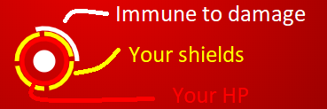

BEAT BEAST

Imune to damage
activates when you spawn and when you take damage. It lasts for few seconds.
Shields
work as extra HPs. When your HP drops to 0, it will consume 1 shield, to fill back up.
Your
hp
will drop to 0 when
hit by a projectile
or
gradually decrease
, when too far away or too close to the
beat beast
.
The
pitch / tempo
of the music will guide you to the
near perfect distance
and also the
background color
(green =good, red = bad).
You will
regain HP
when in the near perfect distance from the beat beast.
WHITE
projectiles will hurt you. (they gradually turn to dark and are harder to spot - watchout!)
GREEN
projectiles will heal you to full HP + 1 shield.
What are you waiting for? Select a song, start the game and use your mouse to control your character. Beat beast is waiting for you ;)
Created @ INOVA IT Game-Jam December 2019 by Dominik Korosec
(
Note:
Because game uses experimental browser APIs, it only works as intended in google chrome)
gorillaz.mp3
darkside.mp3
planet_earth.mp3
omfg.mp3
hold_your_color.mp3
muse.mp3
18.mp3
magic_b4.mp3
enslaved.mp3
null.mp3
Load Custom sound:
PLAY